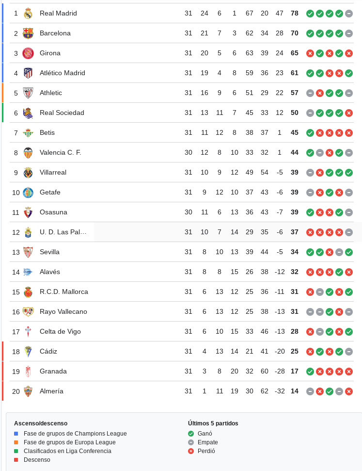
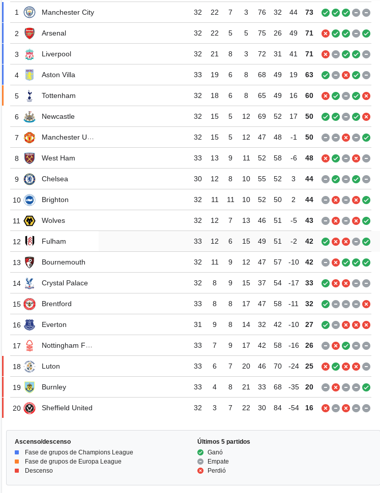
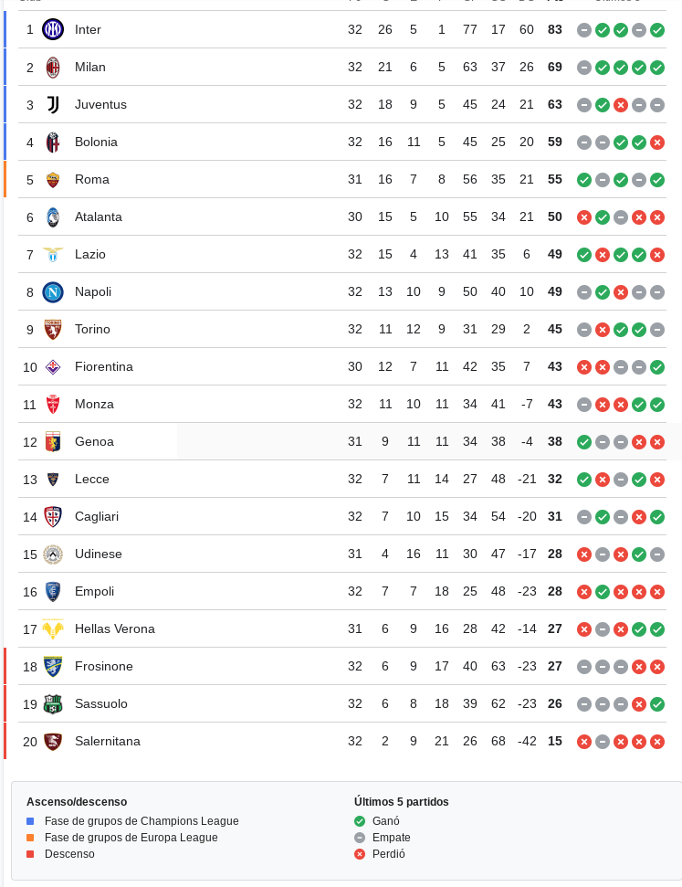
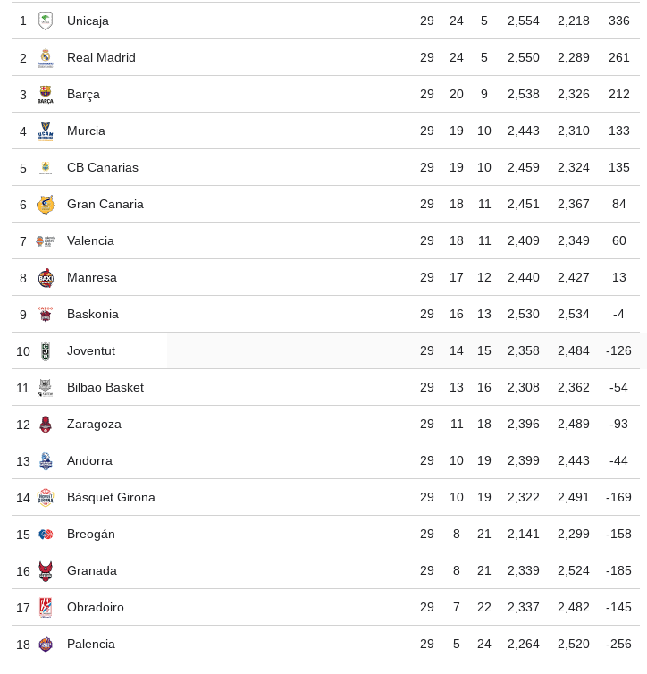
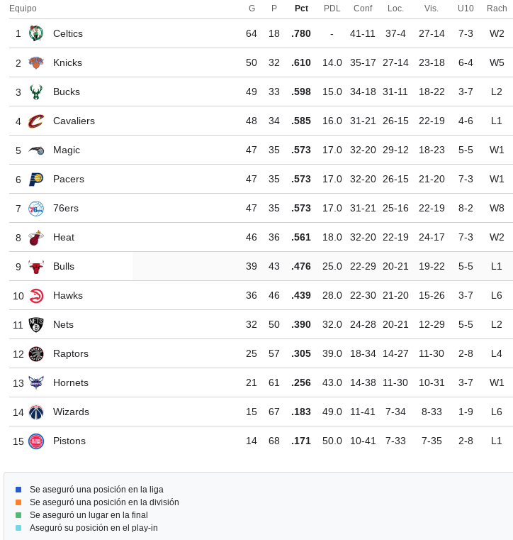

Una de las razones por la cual me gustan los deportes es porque es algo que me mantiene activo tanto fisica como mentalmente, lo cual es algo que me gusta. Otra razon es porque los deportes son actividades que distraen, o al menos a mi, de las cosas/preocupaciones de la vida personal.(Notas, conflictos en casa...)
. A continuacion dare ejemplos de deportes que me gustan y que no me gustan. A continuacion dejare un hipervinculo que llevara a una pagina web donde explica brevemente las principales normas del futbol.
Pincha aqui
Me gusta principalmente el futbol poruqe ademas de que lo practico, al jugar me divierto de tal manera que olvido el resto de cosas.
Una de mis ligas fovoritas como no es La Liga española, pero tambien me gustan otras como la Premier Ligue, La Seria A o la Ligue one.
A continuacion dejare la tabla de calificaciones de las 2 primeras dichas antes (las mas importantes)
| La Liga |  |
| Premier League |  |
| Serie A |  |
A continuacion dejare un hipervinculo que llevara a una pagina web donde explica brevemente las principales normas del Baloncesto.
Pincha aqui
Me gusta el boloncesto ya que a pesar de que no lo juego mucho (casi nada para ser concreto) es un deporte que no es dicil de entender y creo que no es dicil de entender ni de aprender
En cuanto a las ligas, no las conozco mucho pero he investigado y he encontrado La liga ABC y La NBA
| La Liga ABC |  |
| La NBA |  |
La gimnasia es un deportte que no me llama la atencion ni me gusta, ya que para poder hacer gimnasia necesitas elasticidad(no tengo) y ademas siento que no es un deporte para mi ya que no le encuentro la ciencia(sin ofender)
Para no dejar pobre esta presentacion he investigado mas acerca de este deporte y he puesto las normas aqui.